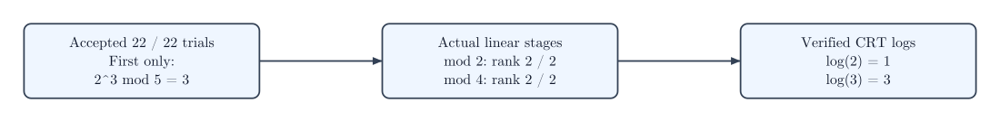
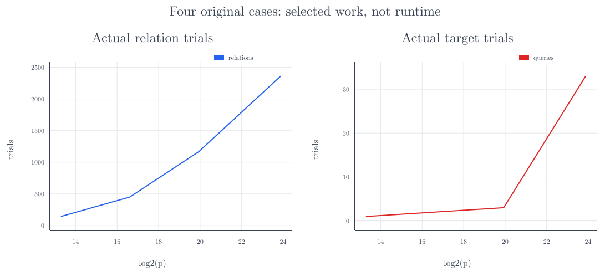
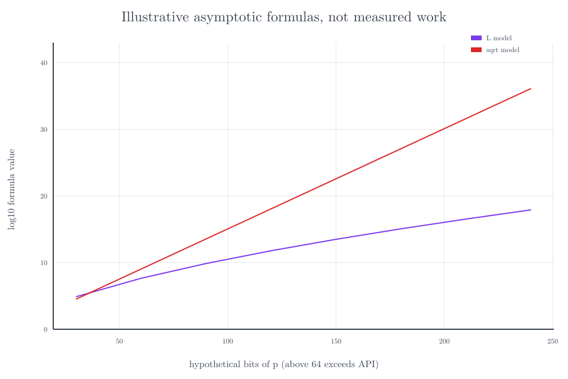

Index Calculus: Actual Relations, Composite Orders and Reusable Logarithms
Abstract
Given a prime p, a primitive generator g and a nonzero target h, find the exponent x with g raised to x congruent to h modulo p. Index calculus converts smooth powers into equations for a small set of prime logarithms, then reuses that table for target queries. We start modulo five, inspect actual relations and prime-power lifts, preserve the original four cases and show a genuinely rank-deficient batch. The original asymptotic curves are retained as illustrative formulas, not measurements of this bounded implementation or cryptographic security estimates.
A complete example modulo five
Let p=5, g=2 and h=4. The multiplicative group has order four, and the valid factor base is {2,3}; primes at least five are excluded because they do not represent the required positive integer factors below p. The logarithms are log₂2=1 and log₂3=3 modulo four. A pre-change probe of the old implementation returned failure for this valid case because its base included unusable primes.
The program prints the first four accepted relations, explicitly a selected subset of the complete history. All actual linear stages and verified base logs are printed. The initial solve modulo two gives only the parity of each log; the lift to modulus four recovers their full values. Finally the actual target shift and smooth factorization produce x=2, checked by exponentiation.
#include <dm/dm.hpp>
int main() {
std::filesystem::create_directories("build");
const auto t = dm::algorithms::index_calculus_prepare_trace(2, 5);
std::print("First four of {} actual accepted relations.\n",
t.relations.size());
std::print("| actual attempt | exponent | residue | powers of [2, 3] |\n| ---: | ---: | ---: | --- |\n");
for (std::size_t i =
0; i < std::min(std::size_t(4), t.relations.size()); ++i) {
const auto &r = t.relations[i];
std::print("| {} | {} | {} | {} |\n", r.attempt, r.exponent, r.residue,
r.powers);
}
std::print("| prime field | resulting modulus | actual rank | actual solution |\n| ---: | ---: | ---: | " "--- |\n");
for (const auto &stage : t.stages)
std::print("| {} | {} | {} | {} |\n", stage.prime, stage.modulus,
stage.rank, stage.solution);
const auto q = dm::algorithms::index_calculus_query(t.table, 4);
std::print("Verified base logs {}. Target 4: actual shift {}, residue {}, powers {}, returned x {}, " "exponent check {}.\n",
t.table.logarithms, q.shift, q.residue, q.powers, q.result.x,
dm::algorithms::mod_pow(2, q.result.x, 5) == 4);
dm::algorithms::index_calculus_preparation_diagram(t).save_svg(
"build/index_calculus_tiny.svg");
}First four of 22 actual accepted relations.
| actual attempt | exponent | residue | powers of [2, 3] |
|---|---|---|---|
| 1 | 3 | 3 | [0, 1] |
| 2 | 2 | 4 | [2, 0] |
| 3 | 2 | 4 | [2, 0] |
| 4 | 3 | 3 | [0, 1] |
| prime field | resulting modulus | actual rank | actual solution |
| ---: | ---: | ---: | --- |
| 2 | 2 | 2 | [1, 1] |
| 2 | 4 | 2 | [1, 3] |
Verified base logs [1, 3]. Target 4: actual shift 0, residue 4, powers [2, 0], returned x 2, exponent check true.

Why smooth powers give linear equations
For a primitive generator g of the prime field's nonzero group, every nonzero residue has a unique logarithm modulo n=p−1. Choose primes qⱼ≤B with qⱼ<p. If an actual residue has the ordinary integer factorization \(g^a\bmod p=\prod_jq_j^{e_j}\), then
Residues are factored as positive integers, not by a finite-field polynomial factorization. Rejected nonsmooth trials increase the attempt/test counters but are not retained as relation rows. The sampler preserves the original xorshift recurrence and samples a in 1 through p−2, excluding the trivial identity power; this differs from textbook sampling that also permits exponent zero.
The group order is a ring modulus, not a prime field
Even for prime p, n=p−1 is generally composite. For example, two has no inverse modulo four: the equation 2L=2 has solutions L=1 and L=3, and dividing by two as if modulo a field would discard information. Merely finding some invertible pivots modulo n can also miss systems that are solvable using different pivots modulo its distinct prime factors.
The kernel factors n into prime powers. It solves A·L=b modulo each prime q using genuine field pivots and requires full column rank there. Given a solution x modulo qʲ, write its lift as x+qʲy. Substitution gives a new field system:
The residual is computed modulo qʲ⁺¹; its representative must be divisible by qʲ, making the displayed quotient well-defined modulo q. Repeating produces a solution for each full prime power. For mutually coprime completed moduli M,m, combine an assembled value x and new residue y with
Exact widened products and overflow-safe reduced addition/subtraction support the full uint64 modulus domain. Every completed base log is checked by powering g back to its prime. Incomplete rank or exhausted relation work returns an explicit unready status, never a fabricated solution. The generator certificate requires factoring p−1; its extra work is not hidden in a claim about index-calculus speed. This is a dense educational implementation, with no generic-log fallback.
For R accepted rows and K base primes, a dense field solve costs O(R·K²) modular operations. There is one such solve per prime-power level; lifting residuals add O(R·K) operations per extra level. Ordinary storage is O(B+R·K), including working matrix copies; tracing adds O((R+stages)·K) retained values. A smoothness test uses K final nondivisibility tests plus at most log₂(p) successful divisions, and each trial also powers modulo p. These operation counts exclude the separate group certificate and public-query table checks. They do not turn a fixed capped implementation into a proven subexponential bit-complexity algorithm.
Reuse the table: the original four cases
For a target h, search an actual shift s for which \(h g^s\bmod p=\prod_jq_j^{f_j}\). The already verified base logs then give
The returned exponent is checked against h. Public queries validate the complete borrowed table, group-factor certificate and supplied base logs before target search; this validation has a cost beyond the counted attempts. Each query starts a copy of the preparation's final RNG state, so the table is immutable across queries and repeated calls are reproducible. Preparation is genuinely reused: no relation matrix is recollected for a new target. The legacy one-shot wrapper still prepares afresh for each nontrivial target.
The next block preserves all four original p,g,x cases and their exact targets. Its two panels count actual relation and target trials. Four successful examples do not establish a timing law, a success probability or a runtime crossover.
#include <dm/dm.hpp>
int main() {
std::filesystem::create_directories("build");
struct Case {
std::uint64_t p, g, x;
};
const std::vector<Case> cases{{10007, 5, 1234}, {100003, 2, 54321},
{1000003, 2, 424242}, {15485863, 6, 9999999}};
std::vector<double> bits, preparation, queries;
std::print("| p | g | actual target | hidden exponent | recovered exponent | verified | relation trials " "| target trials |\n| ---: | ---: | ---: | ---: | ---: | --- | ---: | ---: |\n");
for (const auto c : cases) {
const auto h = dm::algorithms::mod_pow(c.g, c.x, c.p);
const auto t = dm::algorithms::index_calculus_prepare(c.g, c.p);
const auto q = dm::algorithms::index_calculus_query(t, h);
if (!q.result.found)
throw std::runtime_error("original case failed");
std::print("| {} | {} | {} | {} | {} | {} | {} | {} |\n", c.p, c.g, h,
c.x, q.result.x,
dm::algorithms::mod_pow(c.g, q.result.x, c.p) == h,
t.work.relation_attempts, q.attempts);
bits.push_back(std::log2(double(c.p)));
preparation.push_back(t.work.relation_attempts);
queries.push_back(q.attempts);
}
auto a = dm::graphics::RPlot::create();
a.line(bits, preparation, "relations", {37, 99, 235}, 2).title(
"Actual relation trials").x_label("log2(p)").y_label("trials");
auto b = dm::graphics::RPlot::create();
b.line(bits, queries, "queries", {220, 38, 38}, 2).title(
"Actual target trials").x_label("log2(p)").y_label("trials");
auto layout = dm::graphics::RLayout::create(1, 2);
layout.add(a).add(b).size(1100, 500).title("Four original cases: selected work, not runtime").fit_panels().save_svg("build/index_calculus_original.svg");
}| p | g | actual target | hidden exponent | recovered exponent | verified | relation trials | target trials |
|---|---|---|---|---|---|---|---|
| 10007 | 5 | 4873 | 1234 | 1234 | true | 142 | 1 |
| 100003 | 2 | 56246 | 54321 | 54321 | true | 449 | 2 |
| 1000003 | 2 | 671432 | 424242 | 424242 | true | 1166 | 3 |
| 15485863 | 6 | 9002412 | 9999999 | 9999999 | true | 2362 | 33 |

A bounded batch can genuinely fail
With p=11 and g=2, the default 24-row sample happens never to use the factor-base prime seven. Its matrix has rank three for four variables modulo two, so the table is correctly unready. All nonzero targets still have logarithms; this is a sample-rank failure, not proof of nonexistence. A separately requested larger batch in the next block produces a verified table, then reuses it for every nonzero target. There is no silent retry or brute-force fallback.
Domain checks reject nonprime moduli, zero residues and nongenerators before trivial-target shortcuts. The p=2 group is handled explicitly without invalid exponent ranges. Attempts are real finite budgets: zero means no trials, whereas zero optional allocation/history caps disables those caps. A trivial target one or g needs no target trial after the group/table checks.
The default sieve cap admits the complete B+1 Boolean positions. The default matrix cap admits the entire (K+surplus)·K cell request before collection, even if a smaller attempt budget would collect fewer rows. Both default to one million. Trace records reserve 1+K logical units per accepted relation or linear stage, including a failed stage with an empty solution. The one-million-unit optional history cap is checked before append and returns no partial trace on error. Excluded are ordinary matrices/working copies, table/output arrays, scalar/seed metadata, vector capacity and byte/peak RAM. Untraced preparation ignores that history cap. Counter totals exclude primality/generator validation, factorization, sieve work, modular-power internals, allocation/copying and final exponent checks.
#include <dm/dm.hpp>
int main() {
std::filesystem::create_directories("build");
const auto failed = dm::algorithms::index_calculus_prepare_trace(2, 11);
std::print("Default p=11: accepted {}, rank {} of {}, explicitly rank deficient {}.\n",
failed.relations.size(), failed.stages.back().rank,
failed.table.factor_base.size(),
failed.table.status ==
dm::algorithms::IndexCalculusStatus::rank_deficient);
dm::algorithms::IndexCalculusOptions larger;
larger.relation_surplus = 1000;
const auto table =
dm::algorithms::index_calculus_prepare(2, 11, 0x1D2C3B4A59687766ULL,
larger);
std::print("| reused-table target | recovered exponent | target trials | exponent verified |\n| ---: | " "---: | ---: | --- |\n");
for (std::uint64_t h = 1; h < 11; ++h) {
const auto q = dm::algorithms::index_calculus_query(table, h);
if (!q.result.found)
throw std::runtime_error("reused query failed");
std::print("| {} | {} | {} | {} |\n", h, q.result.x, q.attempts,
dm::algorithms::mod_pow(2, q.result.x, 11) == h);
}
const auto tiny = dm::algorithms::index_calculus_prepare_trace(2, 5);
const auto units =
(tiny.relations.size() + tiny.stages.size()) * (1 +
tiny.table.factor_base.size());
dm::algorithms::IndexCalculusOptions exact;
exact.max_history_entries = units;
(void) dm::algorithms::index_calculus_prepare_trace(2, 5,
0x1D2C3B4A59687766ULL,
exact);
exact.max_history_entries = units - 1;
try {
(void) dm::algorithms::index_calculus_prepare_trace(
2, 5, 0x1D2C3B4A59687766ULL, exact);
throw std::runtime_error("history cap accepted");
} catch (const std::length_error &) {
std::print("Exact {} history units admitted; one-short cap rejected.\n",
units);
}
try {
(void) dm::algorithms::index_calculus(0, 1, 5);
throw std::runtime_error("zero base accepted");
} catch (const std::invalid_argument &) {
std::print("Zero generator rejected even for target one.\n");
}
dm::algorithms::index_calculus_preparation_diagram(failed).save_svg(
"build/index_calculus_limits.svg");
}Default p=11: accepted 24, rank 3 of 4, explicitly rank deficient true.
| reused-table target | recovered exponent | target trials | exponent verified |
|---|---|---|---|
| 1 | 0 | 0 | true |
| 2 | 1 | 0 | true |
| 3 | 8 | 1 | true |
| 4 | 2 | 1 | true |
| 5 | 4 | 1 | true |
| 6 | 9 | 1 | true |
| 7 | 7 | 1 | true |
| 8 | 3 | 1 | true |
| 9 | 6 | 1 | true |
| 10 | 5 | 1 | true |
Exact 72 history units admitted; one-short cap rejected. Zero generator rejected even for target one.
Retain the original asymptotic models without treating them as measurements
For a hypothetical large p, the notation \(L_p[\alpha,c]=\exp((c+o(1))(\log p)^\alpha(\log\log p)^{1-\alpha})\) describes an asymptotic form. The classical smoothness tradeoff balances a larger factor base and denser linear algebra against fewer rejected relation trials. Under the associated parameter choices and smoothness assumptions, classical index-calculus analyses lead to an L[1/2,c] form; the finite capped batch implemented here does not establish that asymptotic runtime.
The original eight 30-to-240-bit formula points use the illustrative constant c=√2. We preserve those values and the square-root comparison, evaluating their logarithms directly without exponentiating huge costs:
These curves omit hidden constants and lower-order terms. Bit sizes above 64 are outside this implementation's input type. Their crossing is not an empirical crossover, a proof of this code's speed or a security/key-size recommendation. No unrelated dataset is needed for the arithmetic and relation controls.
#include <dm/dm.hpp>
int main() {
std::filesystem::create_directories("build");
const auto models =
dm::algorithms::index_calculus_cost_models({30, 60, 90, 120, 150, 180,
210, 240});
std::vector<double> bits, index, generic;
std::print("| hypothetical bits | illustrative L-model log10 | square-root model log10 |\n| ---: | ---: " "| ---: |\n");
for (const auto &m : models) {
std::print("| {} | {:.2f} | {:.2f} |\n", m.bits, m.index_log10,
m.generic_log10);
bits.push_back(m.bits);
index.push_back(m.index_log10);
generic.push_back(m.generic_log10);
}
auto p = dm::graphics::RPlot::create();
p.line(bits, index, "L model", {124, 58, 237}, 2).line(bits, generic,
"sqrt model",
{220, 38, 38}, 2).title("Illustrative asymptotic formulas, not measured work").x_label("hypothetical bits of p (above 64 exceeds API)").y_label("log10 formula value").y_limits(0, 43).save_svg("build/index_calculus_models.svg");
}| hypothetical bits | illustrative L-model log10 | square-root model log10 |
|---|---|---|
| 30 | 4.88 | 4.52 |
| 60 | 7.65 | 9.03 |
| 90 | 9.86 | 13.55 |
| 120 | 11.78 | 18.06 |
| 150 | 13.50 | 22.58 |
| 180 | 15.07 | 27.09 |
| 210 | 16.54 | 31.61 |
| 240 | 17.91 | 36.12 |

Validation and reference
Sanitizer tests cover every target for primes through 199 with a larger relation batch, verifying actual accepted products and every recorded prime-power system. They include the four original cases, power-of-two lifts, honest rank failure, complete caps, zero budgets, ownership, invalid inputs and corrupted public tables. A full-width prime control checks a supplied verified one-prime table and a forced smooth shift; it does not claim that random precomputation solved a cryptographic- sized problem. New graphics and model controls check complete display admission, failed-stage diagrams, invalid model inputs and stable log-space evaluation. An independent Python integer oracle checks 486 preparations, 17997 actual accepted relations, 1273 prime-field/lift stages and 2430 queries, including the RNG stream, statuses and all selected counters. Of these preparations, 331 are ready, 146 rank deficient and nine relation limited. Frozen comparisons preserve all 211 old successes among 256 seeded original-prime cases; six of the old 45 failures now solve. Fresh coverage checks pass 90 definitions, 16 compiled public examples and four representative clangd hovers.
The technical reference is [Menezes, van Oorschot and Vanstone, Handbook of Applied Cryptography, Chapter 3](https://cacr.uwaterloo.ca/hac/about/chap3.pdf), Algorithm 3.68 and Example 3.69, with Notes 3.71 and 3.73 on parameter choice and reused precomputation. This report's exact prime-power linear algebra, fixed bounded batch and sampler convention are explicit implementation choices. A small verified demonstration is evidence of arithmetic correctness on those cases, not a practical cryptanalytic performance claim.